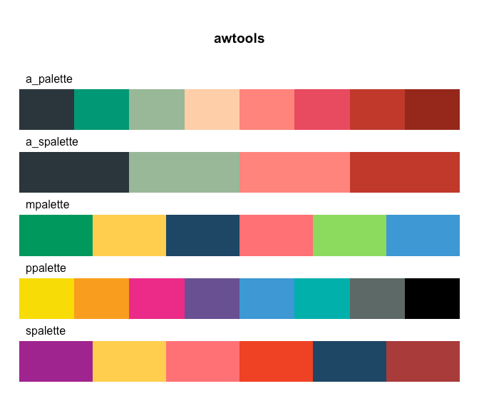
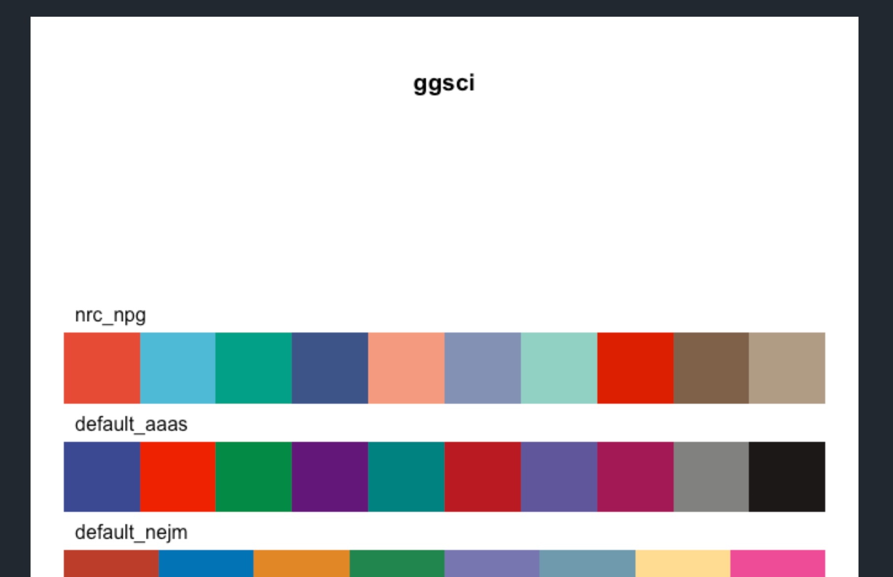
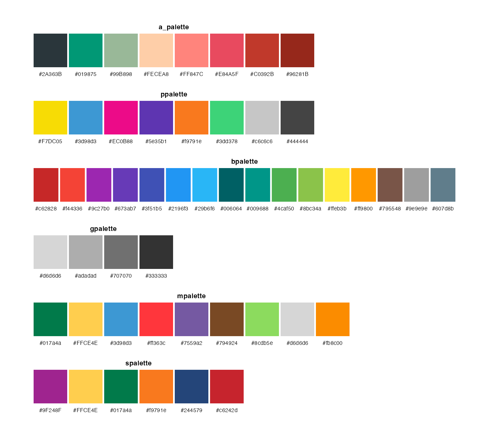
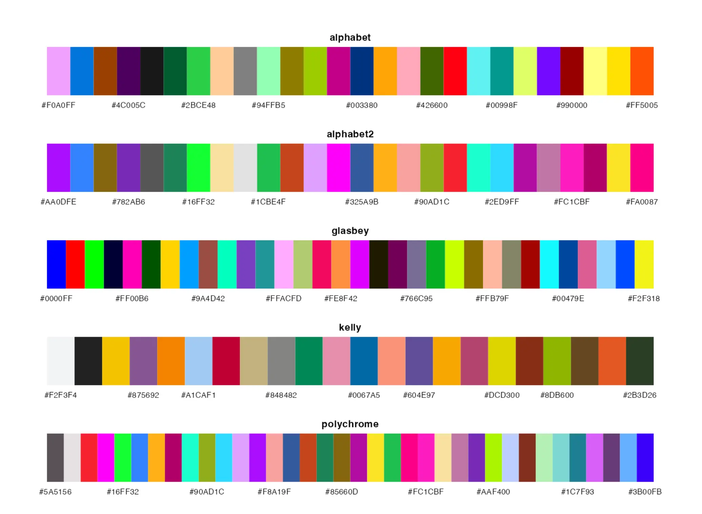

This project has seemingly been useful for a lot of people, as it shows all the palettes from the paletteer package. However, due to the way I had it set up, it has been slowly going out of sync with what was available in paletter due to its very manual construction. This post goes over the new designs and how I made this repository future-proof.
New plotting function
What I imagine is that one of the main draws of the repository is all the visual representations of all the palettes. As a reminder, they looked something like this:

While they look perfectly fine, there were a couple of things I was not perfectly happy with. The images appeared blurry because of the compression I was using. It didn’t contain any information about the colors themselves, so users would need to use a color picker to easily extract colors from the readme. I originally took the approach of prioritising that the palette stretched and took up the whole width. And while that looks very nice, it makes it hard at a glance to see how many colors were in any given palette. Lastly, because of my lack of skills at the time, I wasn’t able to get the dimensions right of the images produced, and I would thus get varying distances between the palette name and the palettes in the pictures. As seen below, the ggsci palette has a much larger gap than the awtools we saw earlier.

Through the years, I have been many ways to display color palettes, and I became quite fond of how it was done in the {ltc} palette readme. And I have taken a lot of inspiration from them in how I adapted my new plotter.
The code I wrote isn’t terribly exciting as a whole, But I will show some of the important points here.
I structured the code into 2 main parts. The first part takes a list of color palettes and generates data frames for what we need. This includes polygons (squares and rectangles) for the colors, hexcodes, and titles with associated locations. The second part is a {ggplot2} call that makes the whole thing happen.
All of the calculations have their origin in the following variables I set at the top.
size <-100gap <-5col_gap <-100
size is the default height of all palettes, gag is the general horizontal spacing between colors in a palette, and col_gap is the vertical spacing between each color palette.
The following is what the awtools palettes look like using the new plotter.

The visualization of each palette is different depending on its length. With 3 different behaviors kicking in at the lengths
2-12
13-16
17+
I treated the shorter palettes as the main focus here. Each color in these palettes will be given a square and the hex code located directly under it. The max width of the image is calculated such that 12 colors fit perfectly across it. This way, you can easily see how long the palette is.
The slightly longer palettes have been resized such that 16 colors fit perfectly across them. This means that they become rectangles instead of squares, but they also include hexcodes below and the white gap between the colors.
The remaining long palettes look very much the same as before. They are created such that each color takes up the same width, calculated such that they stretch across the whole width. 9 hexcodes are shown for roughly evenly spaced colors to provide at least a little context.

The title of each palette is placed above the colors in the middle.
From the size, gap, and col_gap, I was able to calculate exactly the height and width of each image being created. I could pass this directly into ggsave() with units = "px". To make the ggplot2 follow these precise instructions I set theme(plot.margin = margin(0, 0, 0, 0)) to avoid any margins in the plotting, and set expand = c(0, 0) in both scale_x_continuous() and scale_y_continuous() such that only the plotting area is saved in the image. This meant that I manually had to add and account for the margin that I was adding myself.
Reuse Reduce Recycle
Now that we have a way to generate the images, we need to include them in their respective places. Before we look at my new solution, I want to show how we did it before.
The readme had the following chunks repeated once for each package.
Note that this was all handcrafted. The CRAN install instructions are only there if the package is on CRAN. And the fig-height is set manually, which is part of the reason why we saw the inconsistency in spacing before.
I did two things that made all of this much easier. The first thing was the decision to pre-generate all the images instead of having them be generated by individual chunks. Due to the way I designed {paletteer} and the new plotting function, It became quite trivial:
So by using the {glue} package, we could use paletteer_packages to generate all the markdown we would need. Using a little bit of conditional logic to only print the CRAN instructions if the package is on CRAN, and only print the GitHub instructions if the package is on GitHub.
This is where #| results: asis comes in. If I can make a function that returns a print that looks like markdown, then results: asis will insert it into the resulting markdown document as is. This means that across the repository, I was able to delete over 1000 lines of repetitive manual markdown and replace them with a single R chunk.
Not only does it cut down on the number of lines I have to write. It means that next time I add more palettes to {paletteer} I just have to rerender these documents and they will appear with no extra work.
This was previously also all done by hand, and it was more tedious because each package doesn’t always have palettes of each type, And we only want it included in the list if they do. With this new system, I copied the code over, Then, I modified it to generate images for each type, And they used the asis code from before with some small modifications.
The vast majority of the palettes in {paletteer} are novelty palettes based on pop culture trends and images. While fun and exciting, they shouldn’t be used for many visualizations as they don’t contain good qualities.
With all the work described earlier, it made it almost trivial for me to add a new page that excludes all these novelty palettes.
This repository is in many ways acting as a makeshift website, And with that, I had added a makeshift Table of Contents which looks something like this
Table of Contents================= * [Main page](README.md#comprehensive-list-of-color-palettes-in-r) * [Blogposts and other resources](README.md#blogposts-and-other-resources) * [Generative packages](README.md#generative-packages) * [Honorable mentions](README.md#honorable-mentions) * [Palettes sorted by Package (alphabetically)](README.md#palettes-sorted-by-package-alphabetically) * [Non Novelty Palettes](non-novelty.md) * [Sequential color palettes](type-sorted-palettes.md#sequential-color-palettes) * [Diverging color palettes](type-sorted-palettes.md#diverging-color-palettes) * [Qualitative color palettes](type-sorted-palettes.md#qualitative-color-palettes) * [Canva palettes](canva.md) * [Palettetown palettes](palettetown.md) * [News](NEWS.md)
However, I had copied this from page to page, made slight modifications in one area, but not in others. I fixed this with one of my favorite features in {rmarkdown} with child documents
Note
Quarto also has child documents implemented as includes.
This lets me add a single document called toc that contains the TOC markdown. Then, each time I wanted to add a TOC to a page, I just had to add the following chunk to a page.